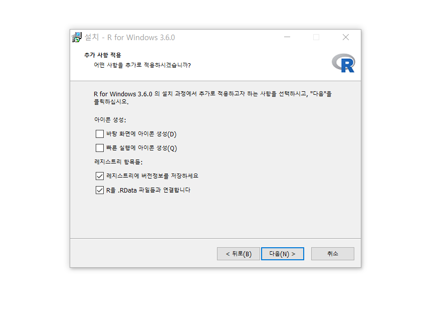

작성 날짜 : 2019. 05. 04.
R 홈페이지(https://www.r-project.org)를 통해서 설치파일을 받습니다. Getting Started에서 파란색으로 표시된 download R을 클릭하면 R을 받을 수 있는 많은 웹페이지 주소를 볼 수 있습니다. 어디든 상관없지만 우리는 그 중 가장 위에 있는 0-Cloud의 웹페이지에서 설치파일을 받겠습니다. RStudio에서 지원하는 웹사이트라는 설명이 있어 왠지 믿음이 갑니다.
Download R for Windows를 클릭합니다.
install R for the first time 클릭합니다.
Download R 3.6.0 for Windows 클릭해서 설치파일을 다운로드합니다. R-3.6.0-win.exe)
기본값을 기준으로 설치합니다.
R-3.6.0-win.exe) 실행이 앱이 디바이스를 변경할 수 있도록 허용하시겠어요? : 예
설치 언어 선택 : 한국어 : 예

C:\Program Files\R\R-3.6.0 : 예Core Files, 32-bit Files, 64-bit Files, Message translations (모두 선택) : 다음
No (기본값 사용) : 다음R : 다음
RStudio 홈페이지에 방문해서 설치파일을 받도록 합니다.
Download RStudio 단추 클릭
DOWNLOAD 단추 클릭 RStudio 1.2.1335 - Windows 7+ (64-bit)을 클릭하면 설치파일 다운로드가 시작됩니다. RStudio-1.2.1335.exe)기본값을 기준으로 설치합니다.
RStudio-1.2.1335.exe) 실행이 앱이 디바이스를 변경할 수 있도록 허용하시겠어요? : 예
RStudio 설치를 시작합니다. : 다음

C:\Program Files\RStudio : 예
RStudio : 설치